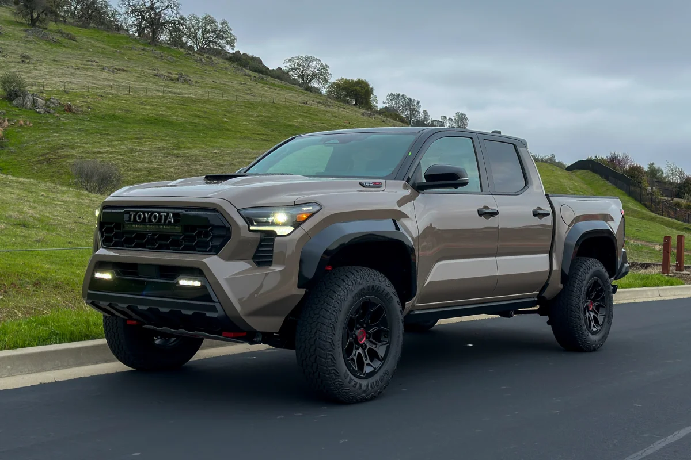

Toyota
Toyota Tacoma
شاحنة بيك أب متوسطة الحجم مخصصة للمغامرات والطرق الوعرة، وتعد من أشهر سيارات تويوتا في أمريكا الشمالية.
شاحنة بيك أب متوسطة الحجم مخصصة للمغامرات والطرق الوعرة، وتعد من أشهر سيارات تويوتا في أمريكا الشمالية.

| المحرك | 2.4 لتر تيربو |
| عدد الأسطوانات | 4 |
| القوة | 278 حصان |
| عزم الدوران | 430 نيوتن متر |
| ناقل الحركة | 8 سرعات أوتوماتيك |
| نظام الدفع | رباعي 4WD |
| التسارع (0-100) | 7.0 ثانية |
| السرعة القصوى | 185 كم/س |
| عدد المقاعد | 5 |
| نوع الوقود | بنزين |